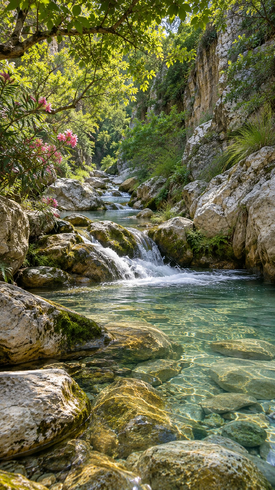

Naturaleza que inspira.
Sonido que conecta.
Un lugar para hacer una pausa.
Respira, crea tu ambiente o dedica un rato a lo que importa.




Una pausa que puedes hacer tuya.
Experiencias sencillas para respirar, escuchar y dedicar tiempo a lo que importa.
¿Qué necesitas ahora?
Cuatro formas de volver a ti. Un espacio para escuchar, sentir y estar presente.
Un ritmo más tuyo.
Acompaña el círculo con una respiración cómoda. Sin retener el aire ni forzar el ritmo.
Cuando quieras.
01:00Tu propia atmósfera.
Combina tres texturas y ajusta cada capa. El sonido empieza solo cuando tú lo decides.
Sonido apagado.
Texturas generadas digitalmente: no son grabaciones de naturaleza. Empieza con volumen bajo.
Una sola intención.
Reserva un rato para leer, crear o descansar. Puedes seguir escuchando tu mezcla al cambiar de herramienta.
Este rato es tuyo.
Mantén la página abierta. El sonido puede no activarse si el dispositivo está bloqueado.
Descubre dónde estás.
No hace falta un paisaje extraordinario. Acércate a una ventana o mira a tu alrededor. Avanza a tu ritmo.
Haz sitio a lo cotidiano.
Una pausa para prestar atención a lo que tienes cerca.
Preferencias, intención y contador se guardan solo en este navegador cuando lo permite. No se envían a TERRA BEATS. El audio se detiene al salir de la página.
Pequeñas formas de explorar.
Mis propuestas guardadas (0)
La historia detrás de una flor.
Descubre cómo abejas y otros animales transportan el polen y ayudan a las plantas a reproducirse.
Explora abejas y polinización →La naturaleza marca el ritmo.
Hay un mundo ahí fuera.
Vuelve a sentirlo.
El agua encuentra su camino. El bosque respira. La luz transforma un paisaje. TERRA BEATS nace de esa capacidad de la naturaleza para despertar algo en nosotros.
Unimos imagen, música y sonido para acercarte a ese mundo: paisajes que invitan a quedarse, atmósferas que acompañan y pequeños descubrimientos que cambian tu forma de mirar.
TERRA BEATS es un proyecto personal en desarrollo. Esta web reúne sus experiencias y conecta con sus contenidos y canales, con la naturaleza como punto de encuentro.
Una mirada más cerca.
Escenas y curiosidades para descubrir lo extraordinario en lo que suele pasar desapercibido.
Un ritmo más tuyo.
Música y ambientes para acompañar una pausa, una idea o un momento de concentración.
Haz tuyo este espacio.
Respira, mezcla sonidos y elige a qué dedicar tu atención. Aquí también formas parte de la experiencia.
De la luz de una estrella
al pulso de este instante.
TERRA es la raíz: agua, piedra, bosque, materia. BEATS es el movimiento: sonido, respiración, repetición, cambio. Juntos expresan una manera de mirar la vida: todo paisaje tiene un ritmo; cada instante, una forma de escucharlo.
Una hoja recoge luz.
Un río dibuja su camino.
Un latido nos devuelve al presente.
Nos inspiran los ciclos: lo que nace, crece, se transforma y deja espacio a lo que viene. Del cielo a la tierra y de la tierra a nuestra experiencia, buscamos historias que despierten curiosidad y reflexiones que permanezcan después de apagar la pantalla.
La naturaleza ya tiene mucho que contar.
Una hoja transforma la luz en alimento ＋
Durante la fotosíntesis, las plantas utilizan energía de la luz para producir azúcares a partir de agua y dióxido de carbono, liberando oxígeno. Una transformación cotidiana que sostiene gran parte de la vida que conocemos.
Para pensar: lo que parece quieto también puede estar transformándose.
Explorar la fotosíntesis · Smithsonian ↗Llevamos una historia de estrellas ＋
El carbono y el oxígeno de nuestro cuerpo se formaron en generaciones anteriores de estrellas. Esa materia pasó a formar parte de nuevas estrellas, planetas y, con el tiempo, seres vivos. Compartimos con el universo una historia material.
Para pensar: mirar el cielo también es preguntarnos de dónde venimos.
Descubrir nuestro origen estelar · NASA ↗Un beat puede ser una invitación a escuchar ＋
En TERRA BEATS, el latido es una imagen de conexión: el sonido del agua, una secuencia musical, una respiración que observamos. Ritmos distintos que nos invitan a prestar atención a lo que ocurre aquí y ahora.
Una pequeña práctica: detente un momento. Encuentra un sonido cercano y otro lejano. Escúchalos sin intentar cambiarlos.
Presencia, intención y una mirada abierta.
También hay lugar para la contemplación, la meditación y el reiki como práctica espiritual: maneras de dedicar tiempo a la atención, al silencio y a la experiencia personal. Nos acercamos a ellas con sensibilidad y respeto por las distintas formas de entender el bienestar.
Cuando hablamos de energía, cuidamos el significado: en la naturaleza es una magnitud física; en el lenguaje espiritual, una forma de expresar una vivencia o creencia. Ambas pueden inspirar nuestro relato, cada una desde su lugar.
Nuestra propuesta es abrir un espacio para sentir y reflexionar, sin promesas de curación ni atribuir efectos terapéuticos a sonidos o frecuencias.
Entra por un paisaje. Quédate por lo que te hace sentir.
Creatividad con transparencia: las recreaciones realizadas con inteligencia artificial se identifican como tales.
Universo TERRA
Plantas, pequeños huertos y momentos para detenerse. Una biblioteca de ideas para explorar a tu ritmo.

Sonidos de lluvia y bosque
Lluvia sin truenos, bosque y agua para enmascarar ruidos y descansar.
Leer la guía →
Guardianes de Iberia
8 especies emblemáticas: hábitat, firma acústica y estado UICN verificado.
Leer la guía →